TENSS 2026 - Electronics Practical
Picoscope software download link:
https://www.picotech.com/downloads/_lightbox/picoscope-7-stable-for-windows
Component reference:
Resistor
A passive1 circuit element that resists the flow of current. You can think of them like constrictions in a water pipe. They are non-polarized (so it doesn't matter in which direction you put them) and look like this:
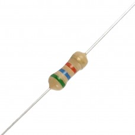
The color code indicates the resistance (the amount of constriction in the pipe). However, it is often easier just to measure them using an ohmmeter instead of memorizing the color code :).
Capacitor
A passive2 circuit element that resists changes in voltage and passes AC currents. You can think of them like diaphragms in a water pipe. Some are non-polarized and others are. If you reverse-polarize the latter, the magic blue smoke that's inside them and allows them to work will escape! Don't let the magic blue smoke out because it's very hard to put it back inside.
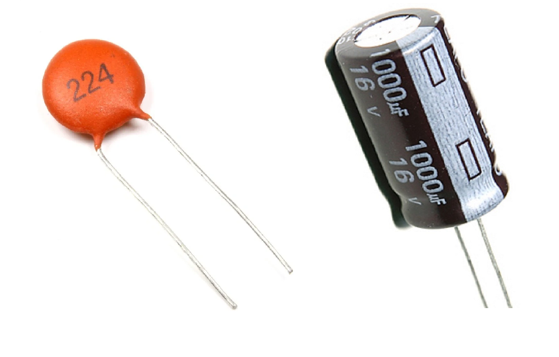
Switch (Push Button)
A simple mechanical device that can connect or disconnect an electrical path. The switches in your kit are momentary tactile push buttons, meaning they only make contact while you are actively pressing them down.
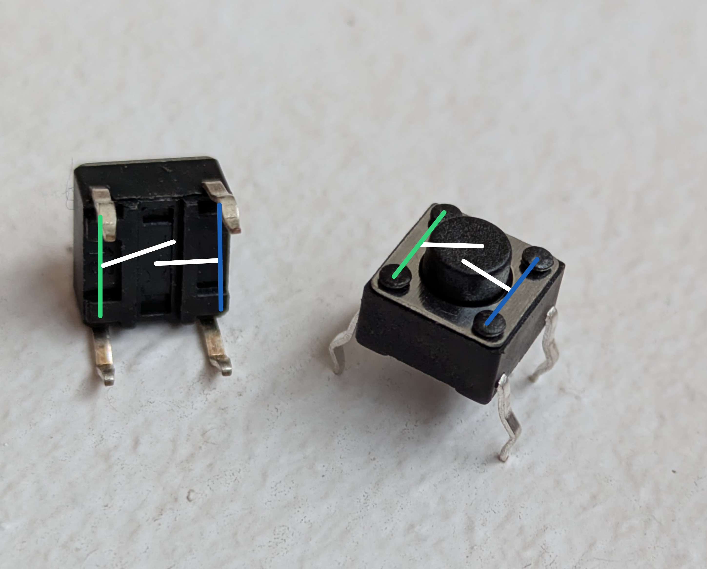
Because the pairs of pins (connected by the green and blue lines) are permanently shorted even when the button is not pressed, it is easy to accidentally bypass the switch. To use it correctly, either place the switch across the middle ravine of the breadboard or place the pins of one of the pairs in the same horizontal row on the breadboard.
Op-amp
An op-amp is short for operational amplifier. It is a ubiquitous active3, analog integrated circuit. It looks like this:
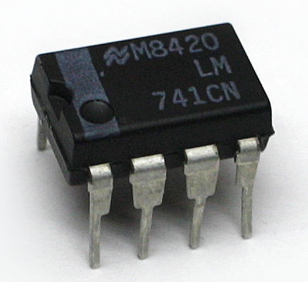
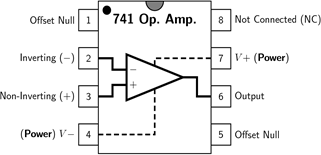
An op-amp is a voltage amplifier and will produce an output voltage that is equal to the difference between the positive (non-inverting) and negative (inverting) input voltages times a gain. The gain is fixed and is absolutely huge (on the order of 1e6). Their output is limited by their power supply rails (V+ and V-; also labeled VCC and VSS, respectively). If you want the output of an op-amp to be an amplified version of the input, rather than just bouncing back and forth between the supply rails, you must tame them using negative feedback to reduce the effective voltage gain. We will do that for all the circuits we use them in.
Breadboard
A breadboard is a convenient way of prototyping circuits. It has the following connection diagram.
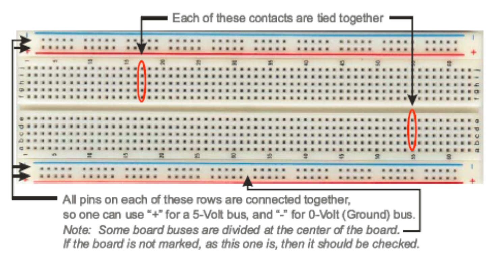
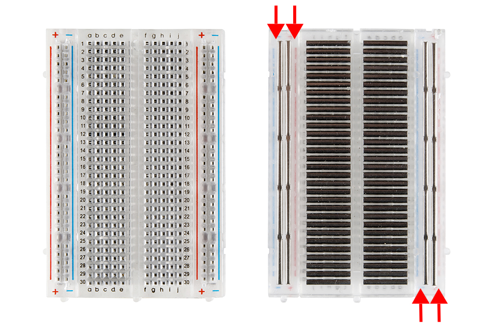
Multimeter
A multimeter is a tool for measuring static (things that don't change quickly over time) characteristics of circuits. They can measure resistance, capacitance, DC current, DC voltage, and the amplitude of AC signals. They cannot measure a time series. Multimeters are "floating" compared to earth. This means it's safe to put their probes at any point in the circuit when measuring voltage because they have no preference for what ground is. Current measurements use a low-value shut resistor in series with the probe that can, e.g. short power supplies.

Oscilloscope
A piece of test equipment that allows observation of time varying voltages. It can plot voltage as a function of time and detect voltage events using threshold crossing (this is called "triggering"). Some have other functions built in as well, such as the ability to generate voltage waveforms. We will be using one of these for this course.
NOTE: Almost all oscilloscopes, including ours, are mains earth referenced. This means that the outer shells of the BNC connections in the front of them are connected to earth ground (third prong on wall plug). USB on a computer that is powered through mains-power cord is also mains earth referenced. Therefore it's quite easy to create unintended circuits with the ground lead on scope probes. Be careful where you put it.
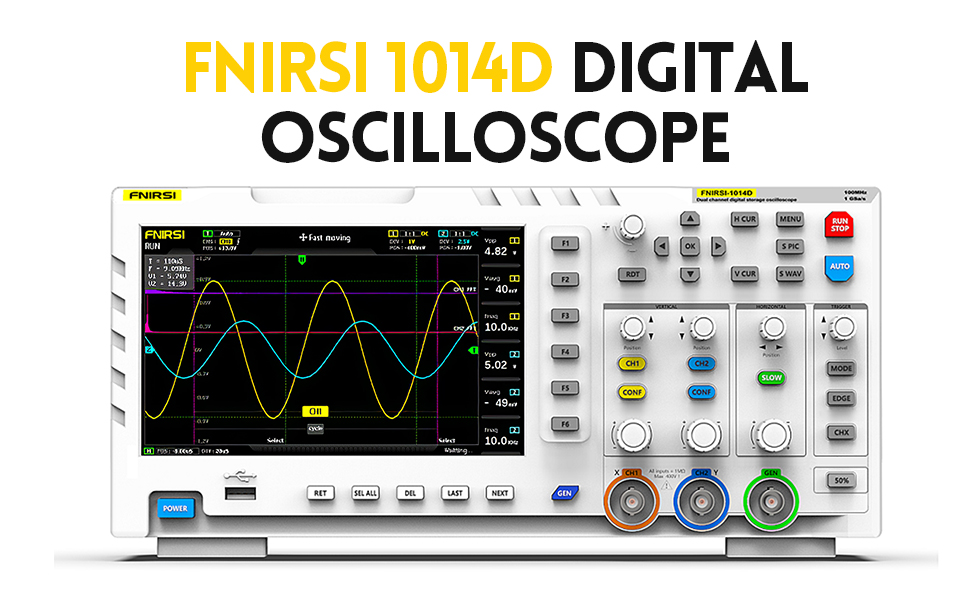
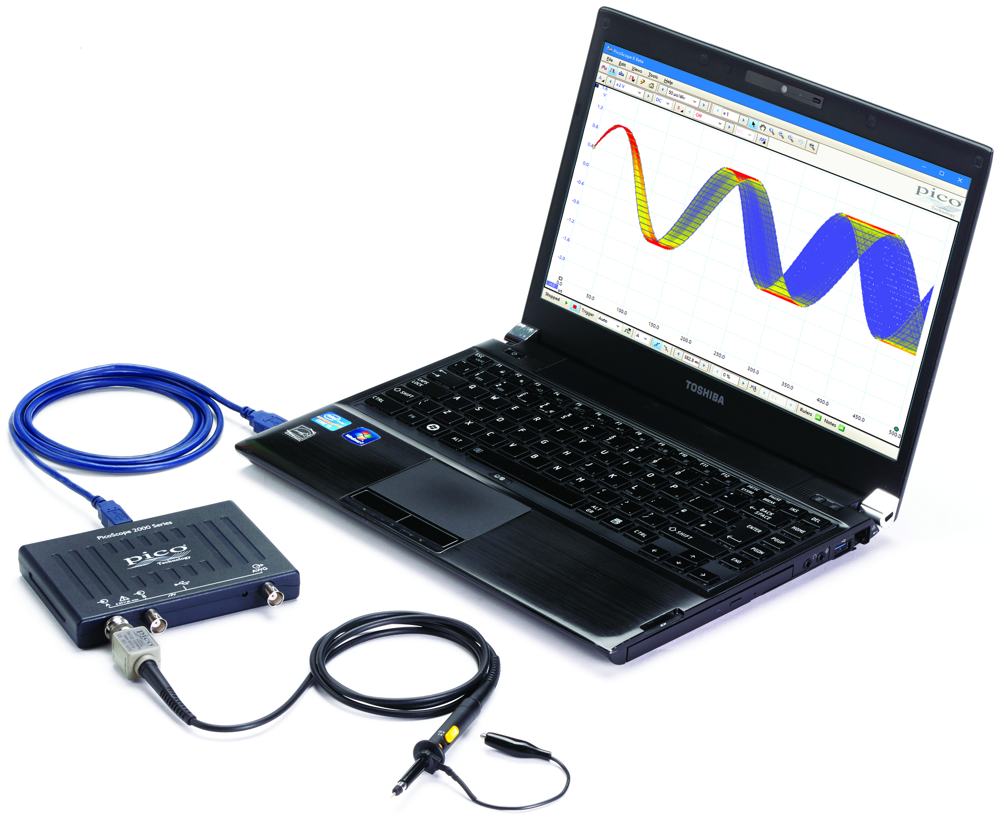
Oscilloscope Probe
A special cable that is connected to the input of an oscilloscope and is used to probe voltages on the circuit under test. Scope probes are designed to reduce the effect of the oscilloscope's measurement on the circuit operation (reduce its "loading"). They do this by attenuating the voltage before it is measured and compensating for the parasitic capacitance of the cable itself (how do you think they attenuate the voltage...?). The degree of attenuation is indicated by the probe (e.g. 1x, 10x, 100x for divide by 1, 10, and 100, respectively) and must be accounted for in the scope to get accurate voltage amplitudes. Some probes have a selectable attenuation. We want to keep our probes in 10x.
NOTE: You must tell your scope software that you are using a 10x attenuating probe so that it can multiply its captured values by 10.
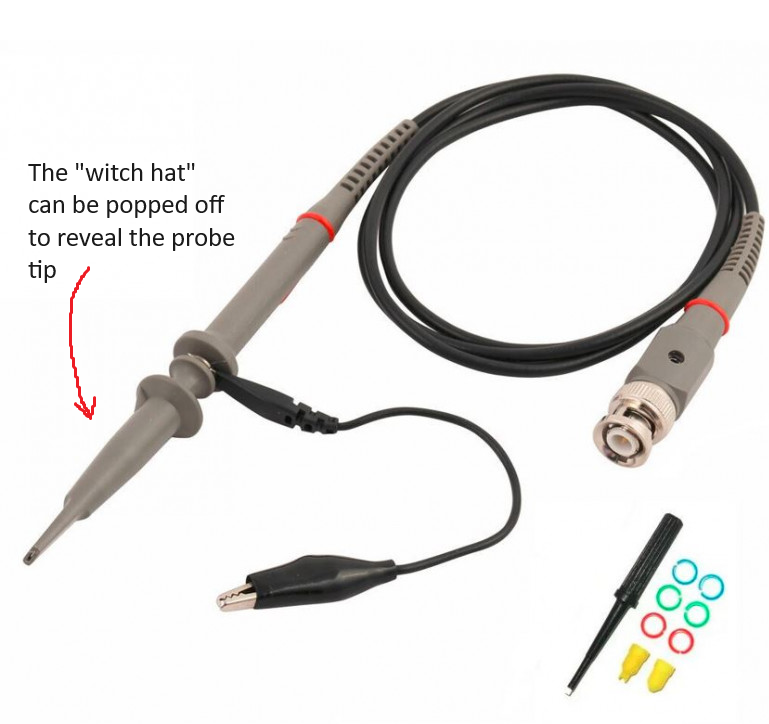
Microcontroller Development Board
A microcontroller is a single-chip computer. It has a CPU, RAM, and peripheral interfaces. They typically don't use an operating system and therefore can run simple programs with a high degree of regularity (there are no 'hiccups' while the computer is 'thinking'). Therefore they are good for acquiring data using analog-to-digital converters or generating signals using a digital-to-analog converter. We will be using either Arduino USB, Teensy, or Pico development boards during the course. These are all small microcontroller boards that provide easy access to the microcontroller's pins and allow you to load programs using USB. The programs are written in C++ and uploaded using a device-specific tool.
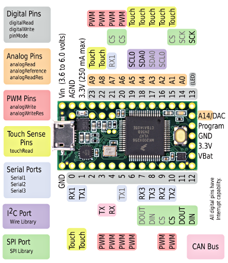
Power Supply: Benchtop power supplies are designed to prove an adjustable, low-output impedance voltage source to power electronics under test. They can be isolated from the mains ground or non-isolated. Bipolar (positive and negative voltage) or unipolar (only one voltage). Supply hundreds of volts, hundreds of amps, or combinations of all of these. They can be linear (use passive elements and a feed-back regulated MOSFET) or switch-mode (using a DC/DC converter inside).
We have some simple, linear, isolated supplies. They have two dials. One adjusts the voltage, the other adjusts the current limit. Keep the current limit in the center. They are touchy. It's best to set the voltage and test with a multimeter, before plugging it into a circuit. We'll only really need these at the end when we record from cockroach legs.
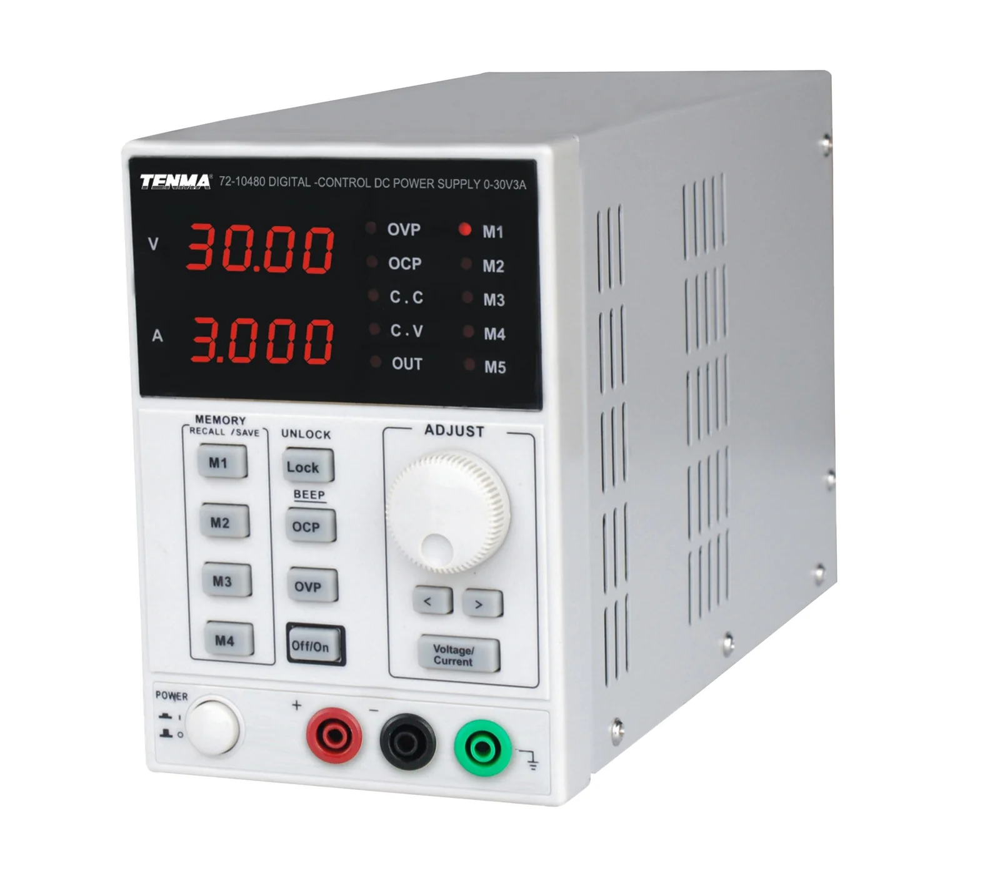
In addition to the benchtop supplies, we have homemade switching regulators that provide fixed output voltage (+/-15V) and are useful for breadboarding.
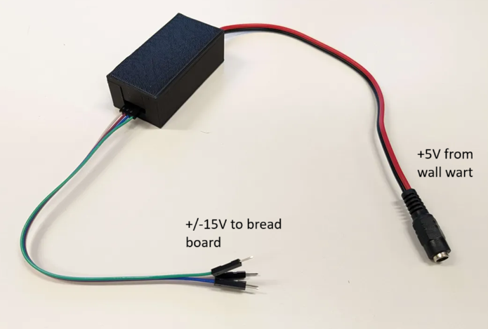
Hints
Passive component values
You don't need to use the exact values of resistors and capacitors presented in each circuit. If you can't find the exact resistor values stated in the design, then find something close. You have the knowledge to calculate the divide ratios, RC constants, etc. It's probably wise to keep things within 10-20% of the values stated here, but as long as you write down the component values you use, and the polarity of capacitors and diodes, you will be fine.
Notes
-
Take pictures of your breadboard and write notes as you go.
-
The oscilloscope does not record long histories of the waveforms it captures. In order to capture a waveform and pause acquisition you can set your run mode to "single" to get a single trigger and waveform. You can use the "S PIC" and "S WAV" to save images and data of the captured waveform, respectively.
-
Keeping a Google doc open to write down answers and to dump screenshots, phone pictures of the scope, etc into may be wise
When in doubt, measure
-
If you forget the value of a resistor that is lying around your bench, simply put your multimeter into resistance mode and measure it.
-
If you are unsure if you have the correct power supply voltage between two pins on an active component, put your multimeter in voltage mode and measure the voltage in the position the pin will go before installing it
-
If you are unsure that you are generating a signal, put it into your scope to verify
-
Etc.
Datasheets
In the world of electronics, the datasheet is the source of ultimate truth. Every component you use will have a datasheet somewhere. This is especially important for the active components used in these exercises: the op-amps and instrumentation amps. If you have a doubt about a component, the datasheet has the answer. They are dry and can take expertise to understand. Your TAs will be happy to help you interpret their content.